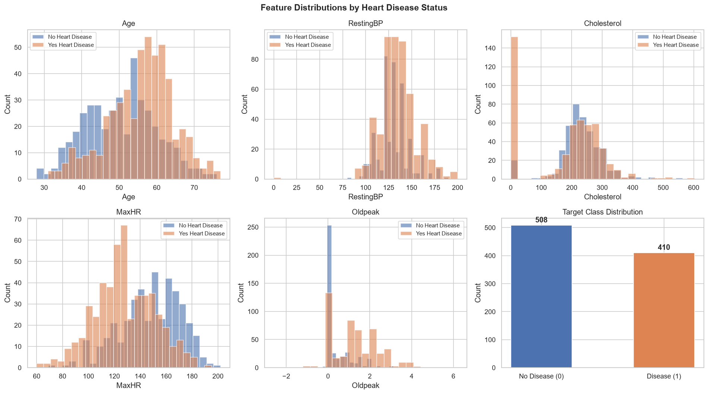
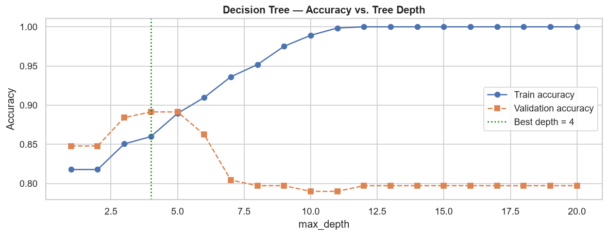
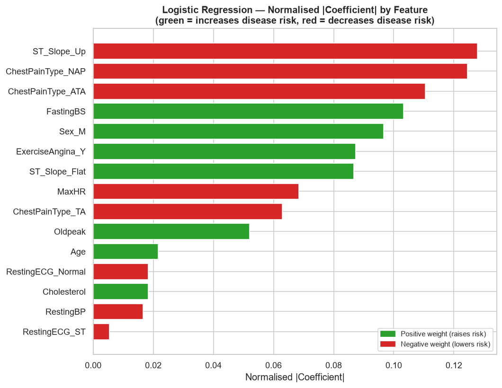
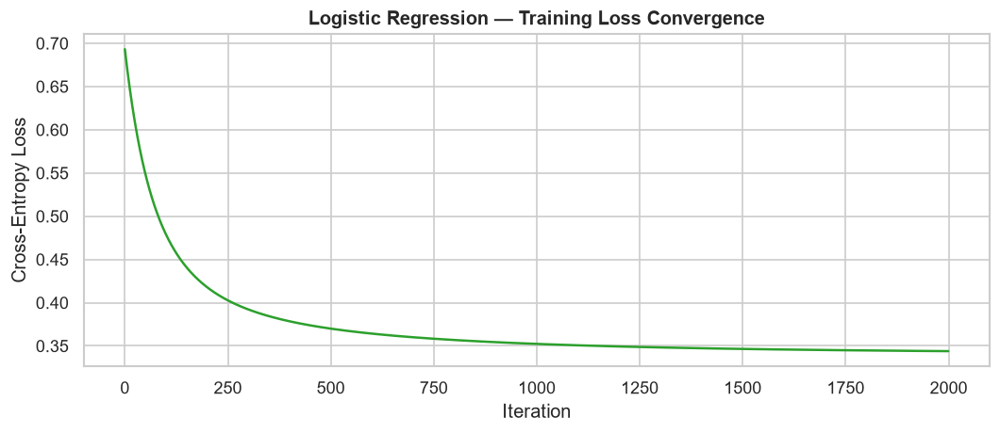

A Decision Tree and a Logistic Regression, both implemented from scratch and compared against scikit-learn
Cardiovascular disease is the leading cause of death worldwide, and a good part of the work of a cardiology clinic is deciding, from a handful of quick measurements, which patients need further tests. We wanted to see how far a simple model can get with only that kind of routine information. The question we set ourselves was:
Can we predict whether a patient has heart disease from basic clinical features, and do models we write ourselves reproduce the results of the established library versions?
This is a supervised binary classification task. The target is HeartDisease (1 means disease present, 0 means absent). Our success criteria are stated before looking at any test results: first, the from-scratch models should match their scikit-learn counterparts on the same data split, with differences we can explain; second, test accuracy should clearly beat the majority-class baseline of about 55%; third, because a missed patient is worse than a false alarm, we also watch recall and not only accuracy.
We picked two algorithms on purpose. A decision tree builds its answer from yes/no questions on single features, which is close to how a clinician reasons. Logistic regression instead combines all features into one weighted score. They fail in different ways, so putting them side by side tells us more about the data than either one would alone. Both are well suited to a small tabular dataset where we want to be able to explain a prediction, which matters in a medical setting.
We used the Heart Failure Prediction Dataset assembled by fedesoriano on Kaggle (kaggle.com/datasets/fedesoriano/heart-failure-prediction). It combines five older heart disease collections (Cleveland, Hungarian, Switzerland, Long Beach VA and Stalog) into one table of 918 patients and 11 predictors plus the target. Patients are aged 28 to 77 (mean 53.5), and 725 of the 918 are male, which is a real limitation we come back to later. We did not redistribute the data in this report; the file heart.csv can be downloaded from the URL above.
The classes are reasonably balanced: 508 patients with disease and 410 without (55.3% and 44.7%). There are no missing values in the usual sense, but the data has a quieter problem described in the next section.
| Feature | Type | Meaning |
|---|---|---|
| Age | numeric | age in years |
| Sex | categorical | M / F |
| ChestPainType | categorical | ASY (none), ATA, NAP, TA |
| RestingBP | numeric | resting blood pressure (mm Hg) |
| Cholesterol | numeric | serum cholesterol (mg/dl) |
| FastingBS | binary | fasting blood sugar above 120 mg/dl |
| RestingECG | categorical | Normal, ST, LVH |
| MaxHR | numeric | maximum heart rate achieved |
| ExerciseAngina | categorical | exercise-induced angina, Y / N |
| Oldpeak | numeric | ST depression during exercise |
| ST_Slope | categorical | slope of the peak exercise ST segment: Up, Flat, Down |

Zeros that are really missing values. Cholesterol contains 172 rows equal to 0 and RestingBP contains one. Neither is physiologically possible, so we treated them as missing values that were coded as zero. We replaced them with the median of the non-zero entries (237 mg/dl for cholesterol, 130 mm Hg for blood pressure). The median is less sensitive to outliers than the mean, but we should be honest that imputing 19% of a column with a constant shrinks its variance and probably hides some signal. We did not drop these rows because that would have cost us almost a fifth of an already small dataset.
Encoding. The five categorical columns were one-hot encoded without dropping a level, which gives 20 input columns. Keeping every level is harmless for the tree and for our logistic regression, since we do not invert a matrix.
Splitting. We split once into 70% train (642 patients), 15% validation (138) and 15% test (138), stratified on the target so every part keeps the same class ratio, with random_state = 42. All hyperparameters were chosen on the validation set. The test set was used only once, for the final numbers.
Scaling and leakage. Logistic regression with gradient descent is sensitive to feature scale, so we standardise its inputs. The StandardScaler is fitted on the training set only and then applied to validation and test, so no test information leaks into training. Trees are invariant to monotone rescaling, so they receive the unscaled data. Both from-scratch models and both scikit-learn models use exactly the same rows.

Model. A binary tree. Each internal node asks one question of the form “is feature j ≤ threshold θ?” and sends the sample left or right. A leaf predicts the majority class of the training samples that reached it.
Objective. For a node with class proportions pk, the Gini impurity is
It is 0 for a pure node and 0.5 for a perfectly mixed two-class node. A candidate split of a node t with n samples into a left child with nL and a right child with nR samples is scored by its Gini gain:
Training. Growth is recursive. At each node we try every feature and, for each, every midpoint between consecutive distinct values as a threshold, and keep the split with the largest ΔG. This exhaustive search is the optimisation procedure; there is no gradient involved. Recursion stops when (i) the node is pure, (ii) it has fewer than min_samples_split samples, (iii) max_depth is reached, or (iv) no split has positive gain. Feature importance is the total sample-weighted Gini decrease contributed by each feature, normalised to sum to 1.
Cost. Our search recomputes the impurity of both children from scratch for every threshold, so a node with n samples and d features costs about O(d n²). Sorting each feature once and sweeping with running class counts would bring that to O(d n log n), which is what scikit-learn does. We kept the simple version because it is easy to read and verify, and we measure the price in Section 6.
Model. The probability of disease is modelled as
and we predict class 1 when p̂ ≥ 0.5, which is the same as z ≥ 0, a linear decision boundary.
Objective. We minimise the binary cross-entropy, which is the negative log-likelihood of the labels under the model:
Gradients. Because σ′(z) = σ(z)(1 − σ(z)), the chain rule collapses neatly and the gradient is just the prediction error times the inputs:
Training. Starting from w = 0, b = 0, we repeat the updates w ← w − α ∂L/∂w and b ← b − α ∂L/∂b for a fixed 2000 iterations, using the whole training set each time. The loss is convex, so there is a single global minimum and no risk of a bad local one. For numerical safety we clip z to [−500, 500] before exponentiating and clip p̂ to [10−15, 1 − 10−15] before taking logarithms.
Beyond comparing accuracy, we checked the implementations against their libraries in several ways. The scratch decision tree and scikit-learn's tree produced identical predictions on all 138 test patients, identical confusion matrices, and feature importances that agree to within 4×10−16. The logistic regression training loss started at exactly ln 2 = 0.6931, as it must when all weights are zero, and decreased monotonically (Figure 10). The scratch and scikit-learn logistic models agree on 96.4% of test predictions and their weight vectors have a correlation of 0.94.
Everything is evaluated on the same fixed split described in Section 3. For the tree we swept max_depth from 1 to 20 and for logistic regression we swept the learning rate over {0.001, 0.01, 0.05, 0.1, 0.3, 0.5} with 2000 iterations. In both cases we selected on validation accuracy. The scikit-learn baselines were given the same tree depth (Gini criterion) and, for logistic regression, max_iter = 2000 with its default L2 penalty (C = 1) and L-BFGS solver. We report accuracy, precision, recall, F1 and confusion matrices, plus ROC-AUC for the two logistic models. Library code was used only for the splitting, scaling, metrics and the baselines, never inside our models.


The flat curve in Figure 5 deserves a comment. Every learning rate gave the same validation accuracy, so the sweep did not really choose anything. Our code picks the first maximum, which is 0.001, the smallest value. We discuss in Section 7 what that means for the final comparison.
| Model | Accuracy | Precision | Recall | F1 | Fit time |
|---|---|---|---|---|---|
| Decision tree, scratch (depth 4) | 0.826 | 0.851 | 0.829 | 0.840 | 105 ms |
| Decision tree, scikit-learn | 0.826 | 0.851 | 0.829 | 0.840 | 2 ms |
| Logistic regression, scratch | 0.862 | 0.913 | 0.829 | 0.869 | 143 ms |
| Logistic regression, scikit-learn | 0.855 | 0.900 | 0.829 | 0.863 | 5 ms |


Scratch against library. The two decision trees are indistinguishable: same predictions, same metrics, same importances. This is the strongest evidence that our split search and tree growth are correct. For logistic regression the scratch model is slightly better than scikit-learn (86.2% against 85.5%, ROC-AUC 0.935 against 0.919), but the gap is a single test patient out of 138. With a test set this small, the standard error of an accuracy near 86% is about 3 percentage points, so we do not claim that our model is better.
Tree against logistic regression. Logistic regression is ahead by about 3.6 points of accuracy (five patients) and, more clearly, in precision (0.91 against 0.85), because it produces fewer false alarms. Recall is identical at 0.829, so neither model finds more sick patients than the other. In other words, a linear boundary is enough for this dataset and the tree's ability to model interactions did not buy anything. The tree's one real advantage here is that its rules can be read aloud.
Overfitting. An unrestricted tree (no depth limit) falls to 78.3% test accuracy, against 82.6% for the depth-4 tree. Limiting depth costs training accuracy but gains about four points on unseen patients.


The two models tell a consistent story. In the tree, ST_Slope_Up carries 64% of the total importance and asymptomatic chest pain a further 16%, so most of the tree's decisions come down to those two features. In the logistic model the largest weights are a flat ST slope (+0.27), asymptomatic chest pain (+0.25), exercise angina (+0.20), a rising ST slope (−0.31) and a higher maximum heart rate (−0.18) on standardised inputs. These agree with what is known clinically about exercise ECG findings. Cholesterol and resting blood pressure matter very little in both models, which is partly a side effect of our median imputation.

The logistic regression result is slightly flattering, and we want to say why. Figure 10 shows that at α = 0.001 the loss is still decreasing after 2000 steps. When we trained the same model with α = 0.1 or 0.5, the loss reached 0.341 and the test accuracy came out at 85.5%, exactly the same as scikit-learn. So our 86.2% belongs to a model stopped early. Stopping gradient descent early shrinks the weights towards zero, which behaves a bit like the L2 penalty scikit-learn applies, and here it happened to help by one patient. The honest summary is that when both are trained to convergence the two logistic regressions are essentially equal, which is what the theory predicts for a convex problem. We left the notebook as it was, but a better protocol would be to add a stopping rule based on the change in loss and to break validation ties towards the better-converged model.
Why the tree struggles slightly. Our best tree has 15 leaves and depth 4. Because a tree splits on one feature at a time, a smooth relationship such as “risk rises gradually as maximum heart rate falls” has to be approximated by a staircase. A weighted sum handles this naturally. Trees are also unstable: a small change in the training data can change the top split and so the whole structure. This is why one depth-4 tree lands below the linear model, and why a random forest would probably close the gap.
Computational cost. Our implementations are 20 to 50 times slower than the library ones (Table 2), which is fine at 642 rows but would not scale. The tree's cost comes from the quadratic split search, and the logistic model's from running plain Python-level iterations with no convergence-based early exit; L-BFGS uses curvature information and typically needs a few dozen iterations instead of thousands.
Limitations.
Possible improvements. Add L2 regularisation and a convergence-based stopping rule to the logistic model; implement mini-batch gradient descent; speed up the tree search with sorting and running counts; use cross-validation and ROC-AUC for model comparison; and try a random forest built from our own tree to study variance reduction.
We implemented a Gini-based decision tree and a gradient-descent logistic regression from scratch and compared them to scikit-learn on one shared split of 918 patients. The tree matches the library exactly, and the logistic regression matches it to within one patient once the learning-rate effect is understood. Logistic regression was the better predictor (about 86% accuracy against 83%), and both models relied mainly on the exercise ST slope and chest pain type. The main lesson for us was less about the winner than about how small the test set is and how easily a tuning detail, here the stopping point of gradient descent, can decide a comparison that looks decisive on paper.
The environment needs Python 3.10 or newer with numpy, pandas, matplotlib, seaborn, scikit-learn and jupyter. Download heart.csv from the Kaggle URL in Section 2 and place it next to the notebook, then run heart_disease_decision_tree.ipynb from top to bottom. The random seed is fixed to 42 for the splits and the scikit-learn baselines; the from-scratch models are deterministic. The notebook saves the figures used here as PNG files. The cell order is: imports, loading and exploration, preprocessing and splits, the two scratch classes, hyperparameter sweeps, final evaluation, feature analysis and overfitting check.
Code and library acknowledgement. NumPy and pandas are used for array work, matplotlib and seaborn for plots, and scikit-learn for train_test_split, StandardScaler, the metrics, and the two baseline models. No other external code was used.